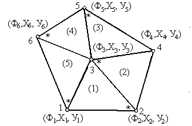

4. ДВУМЕРНАЯ ЗАДАЧА ТЕПЛОПРОВОДНОСТИ
4.1. Постановка задачи
> 
Warning, the protected names norm and trace have been redefined and unprotected
Рассмотрим задачу теплопроводности в двумерной постановке.
С вариационной точки зрения отыскание минимума функционала
![chi = Int(1/2*(K[x]*diff(T(x,y),x)^2+K[y]*diff(T(x,...](images/s_43.gif) (4.1)
(4.1)
эквивалентно решению дифференциального уравнения теплопроводности
![diff(K[x]*diff(T(x,y),x),x)+diff(K[y]*diff(T(x,y),y...](images/s_44.gif) (4.2)
(4.2)
с граничными условиями
![K[x]*diff(T(x,y),x)*l[x]+K[y]*diff(T(x,y),y)*l[y]+q...](images/s_45.gif) . (4.3)
. (4.3)
В
формулах (4.1)-(4.3): Т - температура, К - коэффициент теплопроводности, q -тепловой поток заданной интенсивности, Q - внутренний тепловой источник или сток,  - коэффициент конвективного теплообмена,
- коэффициент конвективного теплообмена,
 - температура окружающей
среды, l - направляющие косинусы
вектора нормали к поверхности,
- температура окружающей
среды, l - направляющие косинусы
вектора нормали к поверхности,
V - объем, S - площадь поверхности, х,у - координаты.
Таким
образом, любое распределение Т(х,у) ,
при котором функционал  (1)
становится минимальным, является решением исходной задачи теплопроводности
(2)-(3).
(1)
становится минимальным, является решением исходной задачи теплопроводности
(2)-(3).
4.2. Описание геометрии области определения в симплекс-элементах
Пусть рассматривается область структуры, аналогичной геометрии из раздела 2 (рис.4.1).

Задаем число узловых точек
> m:=6:
и число элементов
> n:=5:
Вводим координат узловых точек
> X:=[1,3,2,4,2,0]: Y:=[0,0,1,1,2,1]:
Данные о структуре области могут быть представлены номерами узлов каждого из элементов, которые вводятся в обходе по часовой стрелки, начиная с узла, помеченного на рисунке звездочкой.
> G1:=array(1..n,1..25,
[
[2,3,1],
[3,2,4],
[5,3,4],
[6,3,5],
[1,3,6]
]):
Построим изображение расчетной сетки
> 
![[Maple Plot]](images/s_410.gif)
Вычислим площади каждого из элементов
> 


4.3. Описание физических свойств расчетной области
Определим параметры по умолчанию
> Phi:=vector(m);
for i to m do
q[i]:=0: Q[i]:=0: alpha[i]:=1: Tw[i]:=0:
od:

Зададим известные узловые температуры:
> Phi[1]:=100.:Phi[4]:=.0:
Зададим известные тепловые потоки в узлах расчетной сетки:
> Q[3]:=-10:
Можно задать известные температуры окружающей среды для элементов, с ней контактирующих (например, Tw[2]=20)
>
и
соответствующие коэффициенты теплоотдачи окружающей среде
(например alpha[2]=5)
>
Коэффициенты теплопроводности отдельных элементов могут быть отличными от принятых по умолчанию (например K[3]=1.3)
>
Сформируем рабочий массив данных
> 


![matrix([[2, 3, 1, 3, 0, 2, 1, 1, 0, Phi[2], Phi[3],...](images/s_441.gif)
Следующий фрагмент программного кода производит автоматическое вычисление интерполяционных полиномов и функционалов для каждого из n отдельных элементов. В итоге получается суммарный функционал, характеризующий задачу.
> B:=vector([1,x,y]):
eqns:=NULL:ch:=0:
for e to n do
C:=matrix([[1,G1[e,4],G1[e,5]],
[1,G1[e,6],G1[e,7]],
[1,G1[e,8],G1[e,9]] ]):
N:=multiply(B,inverse(C)):
P:=([G1[e,10],G1[e,11],G1[e,12]]):
phi:=multiply(N,P):
chi:=int((1/2)*(K[e]*((diff(phi,x))^2+K[e]*(diff(phi,y))^2)*A[e]),z=0..1):
if G1[e,23]<>0 or G1[e,24]<>0 or G1[e,25]<> 0 then
chi:=chi-sum( 'int((1/2)*G1[e,k]*G1[e,k-13],z=0..1)','k'=23..25):
fi:
if G1[e,13]<>0 or G1[e,14]<>0 or G1[e,15]<> 0 then
chi:=chi+sum( 'int(G1[e,k]*G1[e,k-3],s=0..A[e])','k'=13..15):
fi:
if G1[e,19]<>0 or G1[e,20]<>0 or G1[e,21]<>0 then
chi:=chi+sum('int((G1[e,k-3]/2)*(G1[e,k-9]-G1[e,k])^2,s=0..A[e])',
'k'=19..21):
fi:
ch:=ch+chi:
od:
ch;
![(.5000000000*Phi[2]-50.)^2+(-.5000000000*Phi[2]+Phi...](images/s_442.gif)
![(.5000000000*Phi[2]-50.)^2+(-.5000000000*Phi[2]+Phi...](images/s_443.gif)

Осуществляем минимизацию функционала
> 

![var1 := NULL; for i to m do if type(Phi[i],integer)...](images/s_447.gif)


Формируем итоговую систему линейных алгебраических уравнений (СЛАУ)
> 


и решаем ее
> 

Таким образом получены неизвестные значения температуры в соответствующих узлах:
Процедура сортировки и вывод итогового вектора узловых значений
> 


Проверим невязки
> 

Построим график распределения
температуры
> with(plots):
list_poy := [seq([
[G1[S,4],G1[S,5],G1[S,10]],
[G1[S,6],G1[S,7],G1[S,11]],
[G1[S,8],G1[S,9],G1[S,12]]
],S=1..n)]:
polygonplot3d(list_poy, scaling=UNCONSTRAINED, axes=FRAMED,
titlefont=[TIMES,ROMAN,12], shading=ZGREYSCALE,labels=[x,y,T],
style=PATCHCONTOUR, orientation=[-20,70]);
Warning, the name changecoords has been redefined
![[Maple Plot]](images/s_467.gif)
Упражнение
Для некоторых достаточно тонких элементов конструкций изменением температуры по толщине можно пренебречь. Однако для таких элементов значительное влияние оказывает теплообмен с окружающей средой вдоль лицевых поверхностей.
Найдите распределение температуры для геометрической области рассматриваемой в данном разделе, если происходит подобная теплоотдача при температуре окружающей среды Tw=20, а коэффициент конвективного теплообмена alpha=20. Коэффициент теплопроводности всей области в целом считать равным К=15.